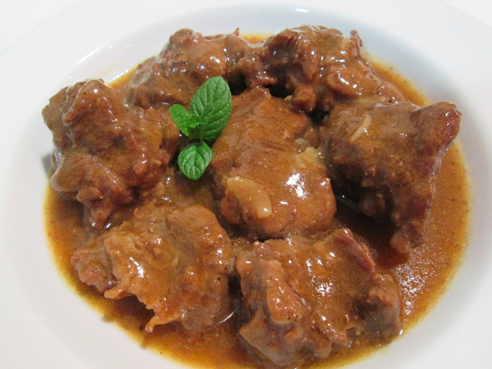

Carne de Vaca estufada

Carne de Vaca estufada
Carne de vaca estufada é um prato tradicional e reconfortante da culinária portuguesa (e também apreciado noutras culturas), feito com carne de vaca cozinhada lentamente em lume brando, num molho rico e aromático.
A carne é geralmente cortada em pedaços médios e dourada primeiro em azeite ou óleo, depois estufada com cebola, alho, tomate, cenoura e especiarias como louro, pimenta e às vezes vinho tinto ou branco, que realça o sabor.
Durante a cozedura lenta, a carne torna-se tenra e suculenta, absorvendo todos os sabores do molho. Pode incluir batatas cortadas em cubos, que cozem juntamente com a carne, ficando impregnadas com o molho espesso e saboroso.
Serve-se normalmente quente, como prato principal, acompanhado de arroz branco, puré de batata ou pão para molhar no molho.
Ingredientes
- 1 kg de carne de vaca (acém ou peito)
- 2 cebolas
- 3 dentes de alho
- 2 cenouras
- 2 tomates maduros
- 1 folha de louro
- 1 colher de sopa de azeite
- Sal e pimenta a gosto
- Água ou caldo de carne
Passos
- Corte a carne em pedaços médios e tempere com sal e pimenta.
- Numa panela grande, aqueça o azeite e doure a carne de todos os lados.
- Adicione as cebolas picadas, os alhos picados e as cenouras cortadas em rodelas. Refogue até que as cebolas fiquem transparentes.
- Junte os tomates picados e a folha de louro. Cozinhe por alguns minutos.
- Adicione água ou caldo de carne suficiente para cobrir a carne. Deixe ferver.
- Reduza o lume, tampe a panela e cozinhe lentamente por cerca de 1,5 a 2 horas, ou até que a carne esteja tenra.
- Se necessário, adicione mais água durante o cozimento.
- Quando a carne estiver pronta, retire do lume e deixe descansar por alguns minutos antes de servir.
- Sirva quente, acompanhado de arroz ou puré de batata.
- Bom apetite!
Voltar ao Início